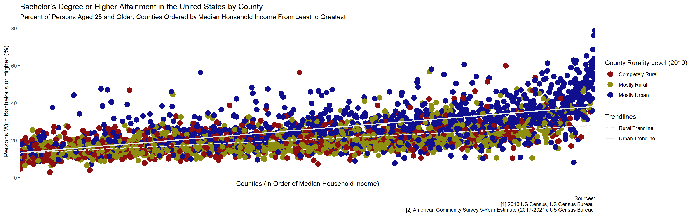

A Short Look at Rural Education
1 A Bit About Small Towns
There is a saying, oft-repeated in the description of plaguing ills, which tells very well the tragedy of places that are neither wholly rural, nor truly city and are certainly not suburbia. First slowly, then suddenly. The small town—the rural city—is a pocket—a vestige of what could have been looking out from some time immemorial when suburbia had not yet come to dominate. While the image of rural America—butchered by popular depictions—may tell of places hardly able to provide much of anything to their citizenry, the rural city is different. The rural city can provide, for now. But what after? There is little to do. A space of some thousands in number, educated relatively well, surrounded by dead industry and minimum wage service jobs. Sure, there are most opportunities available than in the truly empty spaces, but why stay for something so—I feel very sorry to put it like this—middling? The tragedy of these places is that they manage to provide more than they are worth—comparatively speaking—and present little reason to do anything but leave. “[…] Small towns are especially good at recognizing, nurturing, and launching talented individuals. They rally to prepare achievers to leave, succeed brilliantly in doing so, then lament the loss of their combined talents” (Carr & Kefalas, p. 51). I do not want to dwell too long on this note, but keep it in mind as I talk about some interesting aspects of American rural education.
2 Educational Attainment
The trope of the uneducated or undereducated rural is a gross exaggeration, and it washes over the variety of conditions which exist concerning education in rural America. When looking at primary and secondary education levels, the discrepancy is not exactly enormous. Particularly in the case of the former, “[rural children] perform as well as urban children on standardized tests” (Clark, et al.). While standardized testing is a whole assortment of problems on its own, the fact the performance is generally consistent between rural and urban communities lends credence to the idea that the education gap below the post-secondary collegiate level is overblown. Where a clear discrepancy does exist though, is when it comes to higher levels of educational attainment. In terms of collegiate educational attainment “[rural students are behind] suburban and urban counterparts […] largely because of their lower socioeconomic background” (Byun, et al.). What is curious though, is that rural areas across the country tend to underperform the trend more at higher levels of income (see the figure below). The more potentially well-off, the worse the performance relatively.
This can be explained as rural counties simply making up a greater proportion of lower median income counties, but even with that in mind, urban counties at lower income levels do not tend to perform nearly as often and far above the trendline as they do at higher levels of income. The disparity between rural and urban educational achievement grows with greater levels of income. In this case, rurality is a greater determinant of attainment than income, but that is because the positive impact of rising incomes on education is conditioned by the negative impact of rurality. What could that negative impact be?
3 Rural Income Inequality
It is not just that rural America is poor, it is that “[…] high levels of local income inequality have been a disproportionally rural issue over the past half-century” (Butler, et al.). There are actually many places in the United States that are both very rural and very affluent but living in them as a less-than-affluent individual is a quick ticket to a harsh life. Less dense regions have a lesser availability of public resources to aid individuals who need help and that means that as you start climbing the ladder of costs—going to college is slightly more expensive than the 3rd grade—those unable to bridge the gap will not. This is not the only factor, of course, and that is visible in the fact that at the state-level, sometimes the rural-urban divide on educational attainment is not so significant. For example, according to data from the U.S. Census and the American Community Survey (ACS), the divide in the state of Texas is significantly less pronounced than that in the states of Alabama, Kansas, or West Virginia. Still, we see at the national level that there is a correlation between median income and educational attainment, and we see that rural counties underperform relative to urban ones as median income levels rise.
4 A Tangent About Rural Out-migration
Recall the small town. What, thinking between income and post-secondary collegiate education, primarily influences out-migration from rural areas? Looking again at county-level data from the U.S. Census and ACS, in the states of Vermont and West Virginia, the rural counties that did not experience population decline between 2010 and 2020 tended to be wealthier. In West Virginia for example, Pleasants County with one of the lowest number of residents, 25 years or older, recorded as holding a bachelor’s degree or higher at 11.9%, was one of only 6 counties—4 rural counties—that did not experience decline from 2010 to 2020. The counties not experiencing out-migration were, in all, less relatively poor than they were relatively or strictly uneducated. Income is a greater determinant than educational attainment in cases of migration when the two are examined purely side-by-side. The counties that did not experience population decline tended to be wealthier, even when they were not always particularly well educated compared to the rest of the state. Do people leave because they are educated or because they can make more money? There is a difference.
5 Returning to Income
If the goal is strictly to improve collegiate educational attainment on the whole among rural American counties, it is easier to just say “give people money,” in light of how complex accounting for rurality becomes. I wholeheartedly support that measure as a currently poor college student (as of 2023, fingers crossed I win the lottery), but unfortunately it does not play well politically. Incomes would have to be raised endogenously, but how? Remember the small towns, people leave the moment they think they have the tools to make it somewhere better. Moreover due to regional variation, it is clear that some places will not even see much change in outcome from higher levels of income. What is more actionable? What could prepare people for jobs that are available even in rural spaces (not counting remote work but that is valuable to consider) such that they will not just leave, and what could do so for less than what is charged by universities today?
6 One Idea
Trade work is many things, but to avoid going into excruciating detail, think welders, electricians, mechanics, and all jobs of that nature. Trade work can be learned at trade schools. Trade schools tend to not only be cheaper than a baccalaureate education, but can provide an education that is—depending on the subject of study—applicable in almost any place, serving as a reliable ticket to employment even in rural counties. Additionally, vocational education can serve as an outlet for students who tend to underperform individually in classroom environments (Rich). This is skilled work that pays well, or at least better than a lot of work available in rural areas. This is also work that requires an education and “[requires] workers who can interpret blueprints, program computerized machinery and solve problems on the fly” (Rich). Despite this, the federal government has not pinned nearly as much value as should be onto these institutions as possible centers of rural education in the past few years (Rich), allowing trade schools to fall out of the immediate mind even among some who live in the areas which could most benefit.
Trade schools are cheaper to attend and can provide an education that is more than applicable to the job market in rural counties. The point is not to prevent people from pursuing an academic career, it is to promote an alternative that could convince them to stay closer to home by giving them a way to actually make money there. Additionally, opening up vocational opportunities could get older residents in rural counties back to school, which would improve general education in counties. “In the future, most young adults will need post-secondary education in order to find good-paying jobs. However, millions of so-called ‘middle skill jobs’ will require something less than a bachelor’s degree” (Harvard Graduate School of Education). Again, this is an alternative that makes sense in the context of wanting to raise incomes and keep populations within rural communities as it will achieve one by the other and vice versa. These institutions have their own problems, and I will at some point expand on them, but for now I will close by saying that I think they are valuable to improving both incomes in rural areas and reducing out-migration. Perhaps, as incomes rise, more will later go on to pursue a baccalaureate education and hopefully, there will be more opportunities to use that degree at home in future.
References
1. Population Change and Income Inequality in Rural America | Population Research and Policy Review, vol. 39, no. 5, pp. 889–911. | 2020 (Butler, Jaclyn, et al.)
2. Rural-Nonrural Disparities in Postsecondary Educational Attainment Revisited | Am. Educ. Res. J., vol. 49, no. 3, pp. 412–437. | 2012 (Byun, Soo-yong, et al.)
3. Hollowing out the Middle: the Rural Brain Drain and What It Means for America | Beacon Press | 2009 (Carr, Patrick J., and Kefalas, Maria)
4. Growing up in Rural America. | RSF: The Russell Sage Foundation Journal of the Social Sciences, vol. 8, no. 3, pp. 1–47. | 2022 (Clark, Shelley, et al.)
5. Pathways to Prosperity Seeks to Redefine American Education System | Harvard University | 2010 (Harvard Graduate School of Education)
6. Tough Calculus as Technical Schools Face Deep Cuts | The New York Times | 2011 (Rich, Motoko)
7. 2017-2021 American Community Survey (ACS) | Census.gov | (US Census Bureau)
8. Decennial Census of Population and Housing | Census.gov | (US Census Bureau)